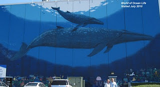

When we first started looking at the location of all the walls and I saw Salt Lake City I figured it would be a long time before we got to that one. Goes to show how life can be unpredictable.
Just 5 months after we started this adventure we find ourselves moving to Boulder and driving right through Salt Lake City on our way there. With just a little planning it was easy to get there during the day when we could see World of Ocean Life.
This wall really made me wonder how Wyland selected the sites. It’s not that it’s in Salt Lake but rather that it is on the wall of a furniture store that’s in part of the city that’s all big box warehouses. It’s not in the center of town. It’s not even in a place a lot of people would go by and see. It’s not on a public building. I’m sure there is a connection somewhere and if we ever meet him it’s one of the questions I would love to ask him.
One of the special parts of this wall is along the bottom where it kids from the local area added their own sea life to the wall. It’s hard to imagine that this whole wall was painted in less than a day.